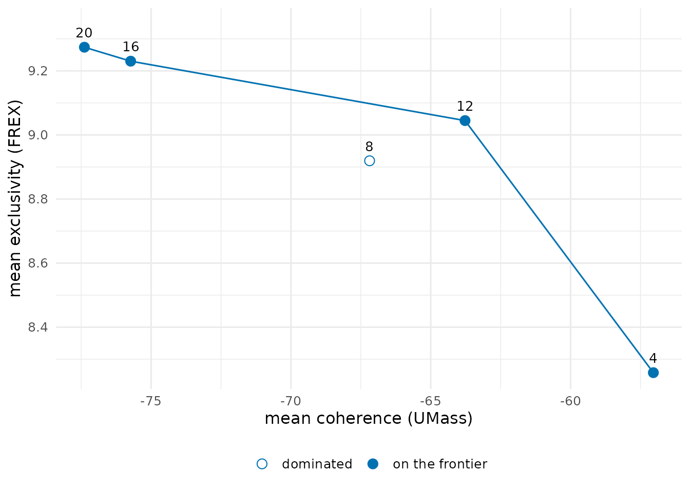
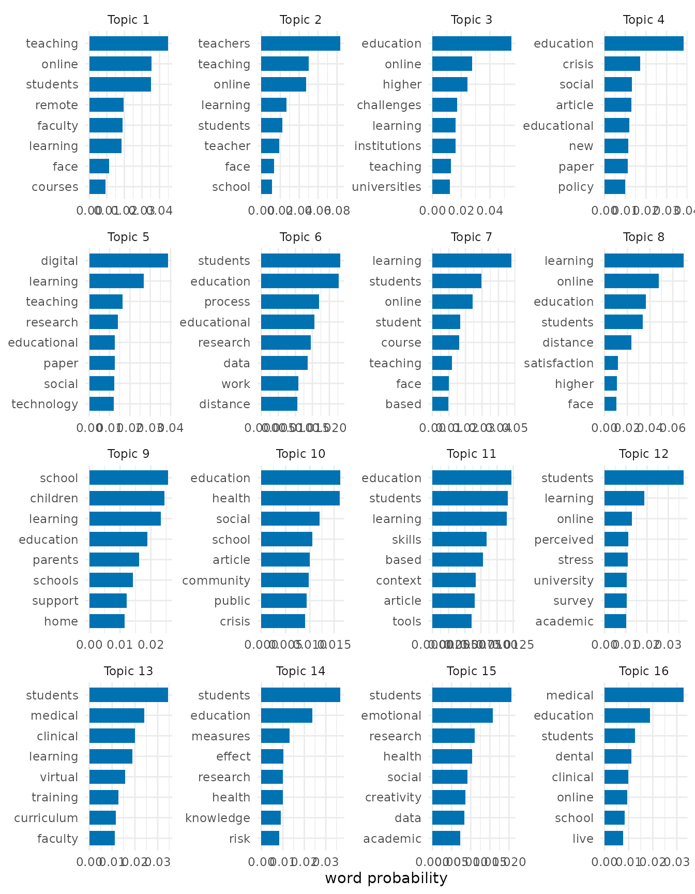
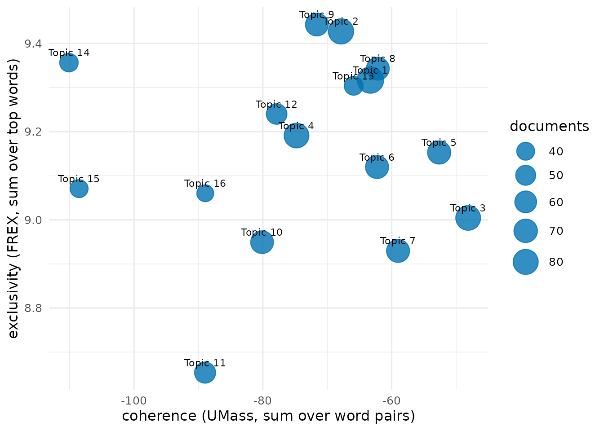
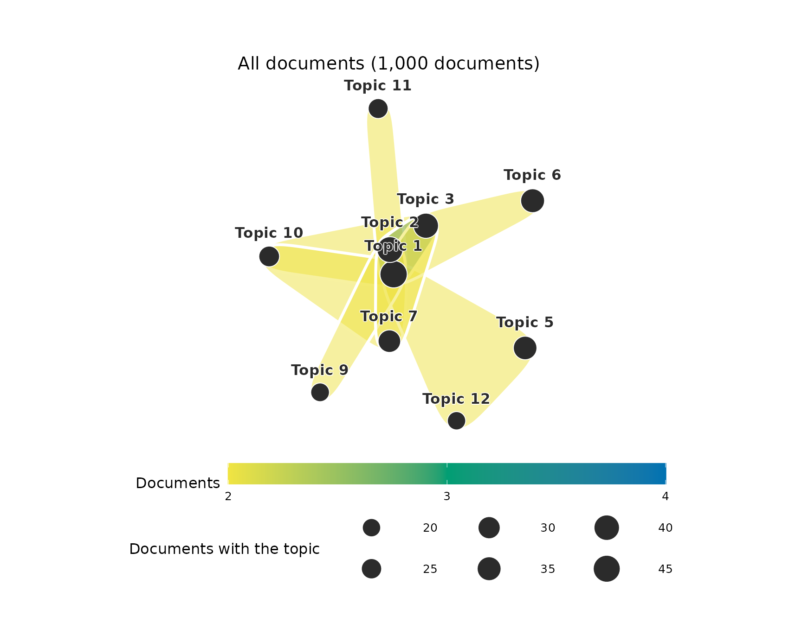
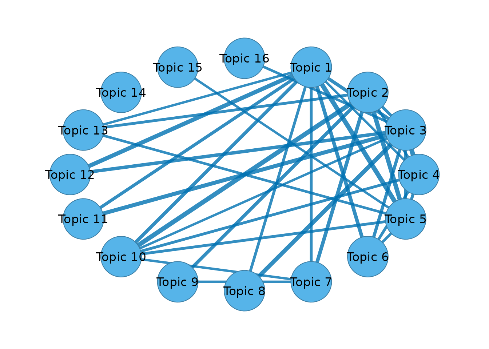

Mixed-membership topics of the COVID-19 education literature
Source:vignettes/topic-mixtures.Rmd
topic-mixtures.RmdA topic model describes a corpus by a small number of themes. Each theme, or topic, is a probability distribution over the words of the vocabulary, and each document is a mixture of topics in proportions of its own. An abstract on the online teaching of medical students draws on a topic about online teaching and on a topic about medical education, and it belongs to both in the proportions its words indicate. A partition, in which every document belongs to exactly one topic, is the special case of documents that are each about one thing. The shares of a mixed-membership model show how close a corpus comes to that case.
The corpus
covid_sample holds a random sample of 1,000 abstracts of
research on COVID-19 and education published from 2020 to 2024.
clean_text() removes what a bibliographic export adds to an
abstract, such as HTML, citation numbers in brackets, URLs and copyright
notices. The stop list is stop_words_en() together with the
words that name the subject of every abstract, since a word that occurs
in every document separates none of them.
abstracts <- clean_text(covid_sample, column = "abstract")
boilerplate <- c("covid", "coronavirus", "sars", "cov", "pandemic",
"disease", "study", "studies", "result", "results",
"conclusion", "conclusions", "background", "method",
"methods", "objective", "aim")
stops <- c(stop_words_en(), boilerplate)The hypergraph
Each abstract is a node, and each word that occurs at least five
times in the corpus is a hyperedge that binds the abstracts using it.
The incidence of an abstract and a word is the count of the word in the
abstract. The incidence matrix is stored dense
(sparse = FALSE), which the graded memberships at the end
require.
abstracts_hg <- text_hypergraph(abstracts, column = "abstract", id = "doc",
stop_words = stops, min_count = 5,
min_chars = 2, sparse = FALSE)
abstracts_hg
#> Text hypergraph: 1000 documents, 3206 words (documents as nodes, weight = n)
#> Hyperedges: 3206 (words); sizes 1-688, median 10
#> doc word count weight
#> 2-s2.0-85082857029 addition 1 1
#> 2-s2.0-85082857029 although 1 1
#> 2-s2.0-85082857029 attempt 1 1
#> 2-s2.0-85082857029 basic 1 1
#> 2-s2.0-85082857029 beneficial 1 1
#> 2-s2.0-85082857029 bridge 1 1
#> 2-s2.0-85082857029 care 1 1
#> 2-s2.0-85082857029 centers 1 1
#> 2-s2.0-85082857029 challenge 1 1
#> 2-s2.0-85082857029 changes 1 1
#> ... 73167 more rowsThe hypergraph has 1000 abstracts and 3,206 words.
How many topics
A topic model has as many topics as it is given, and no statistic identifies the correct number. Two properties of the topics guide the choice. Semantic coherence measures how often the most probable words of a topic occur in the same documents (Mimno et al. 2011). For every pair of top words it takes the logarithm of the number of documents containing both, plus one, divided by the number of documents containing the more probable word, and it sums these values over the pairs. Values closer to zero are more coherent. Exclusivity measures how far the top words of a topic belong to that topic rather than to the others. FREX combines, for every top word, the rank of its probability within the topic and the rank of its share of the probability it has across all topics, and sums these over the top words (Bischof & Airoldi 2012). Models with fewer topics have broader, more coherent topics, and models with more topics have narrower, more exclusive ones. A number of topics is worth considering when no other number gives both a higher coherence and a higher exclusivity, and these numbers form the frontier of the two measures (Roberts et al. 2014).
hg_topic_search() fits the topic model of the next
section for 4, 8, 12, 16 and 20 topics, each from two random starts, and
reports the mean coherence and the mean exclusivity of the ten most
probable words of the topics.
topic_search <- hg_topic_search(abstracts_hg, k = seq(4, 20, by = 4),
nstart = 2, parallel = TRUE, n_cores = 2)
topic_search
#> k coherence exclusivity divergence agreement converged frontier
#> 1 4 -57.04019 8.258057 273341.7 0.6460459 TRUE TRUE
#> 2 8 -67.18732 8.919377 258924.3 0.5405804 TRUE FALSE
#> 3 12 -63.77484 9.044799 249191.7 0.4270125 TRUE TRUE
#> 4 16 -75.73072 9.230223 241968.0 0.4122055 TRUE TRUE
#> 5 20 -77.38563 9.273786 235778.3 0.4196326 TRUE TRUE
plot(topic_search)
Mean coherence falls from -57 with 4 topics to -75.7 with 16 and -77.4 with 20, and mean exclusivity rises from 8.26 to 9.23 and 9.27. The models with 4, 12, 16 and 20 topics lie on the frontier. Sixteen topics is the number of the published structural topic model of this literature (Saqr et al. 2023), and the model below uses it.
A mixed-membership model of 16 topics
hg_topics() approximates the matrix of word counts, with
one row per abstract and one column per word, by the product of two
non-negative matrices. The first gives every abstract a weight on every
topic, and the second gives every topic a weight on every word. The fit
minimises the Kullback-Leibler divergence between the counts and their
approximation by the multiplicative updates of Lee and Seung (2001).
With this divergence the factorization is the maximum-likelihood fit of
probabilistic latent semantic analysis (Hofmann 1999; Gaussier &
Goutte 2005). After normalisation, the weights of an abstract are its
shares of the topics, which sum to one, and the weights of a topic are
the probabilities of its words.
The fit depends on its random start. It is run from five starts, and the start with the smallest divergence is kept. The agreement of a topic is the average Jaccard coefficient of its first one, two, and up to ten most probable words with those of the matching topic of another start, the topics of two starts being paired by the Hungarian method (Kuhn 1955; Greene et al. 2014). A topic whose agreement is close to one is found again from every start.
topic_model <- hg_topics(abstracts_hg, k = 16, nstart = 5, parallel = TRUE,
n_cores = 2)
topic_model
#> Topic model (KL factorization): 16 topics, 1000 documents, 3206 words; best of 5 starts (divergence 241567, converged)
#> topic prevalence documents agreement
#> Topic 1 0.08928459 89.28459 0.4701659
#> Topic 2 0.08170103 81.70103 0.5401220
#> Topic 3 0.07823106 78.23106 0.3416270
#> Topic 4 0.07808382 78.08382 0.4845528
#> Topic 5 0.06831896 68.31896 0.3269328
#> Topic 6 0.06743098 67.43098 0.4000271
#> Topic 7 0.06704091 67.04091 0.5148371
#> Topic 8 0.06659078 66.59078 0.5168540
#> Topic 9 0.06592187 65.92187 0.7267678
#> Topic 10 0.06571205 65.71205 0.3998778
#> top_words
#> teaching, online, students, remote, faculty
#> teachers, teaching, online, learning, students
#> education, online, higher, challenges, learning
#> education, crisis, social, article, educational
#> digital, learning, teaching, research, educational
#> students, education, process, educational, research
#> learning, students, online, student, course
#> learning, online, education, students, distance
#> school, children, learning, education, parents
#> education, health, social, school, article
#> ... 6 more rowsThe prevalence of a topic is its mean share over the abstracts, and its documents column is the sum of those shares, the expected number of abstracts it accounts for. The largest topic, led by teaching, online, students, remote, faculty, accounts for 8.9% of the corpus, and the smallest, led by medical, education, students, dental, clinical, for 3.5%. The mean agreement of the topics across the starts is 0.43. Topics with a low agreement are one of several divisions of their part of the vocabulary that the data support about equally well.
plot(topic_model)
How mixed the abstracts are
The largest share of an abstract identifies its main topic.
main_topics <- hg_get(topic_model, what = "documents")
head(main_topics)
#> node topic share
#> 1 2-s2.0-85082857029 Topic 16 0.6736757
#> 2 2-s2.0-85083678184 Topic 4 0.3823343
#> 3 2-s2.0-85085340620 Topic 13 0.2170913
#> 4 2-s2.0-85085481629 Topic 4 0.5309569
#> 5 2-s2.0-85085656133 Topic 15 0.5887669
#> 6 2-s2.0-85085770267 Topic 5 0.5625973In the median abstract the main topic has a share of 0.55, and half the abstracts lie between 0.4 and 0.73. 11.7% of the abstracts have a main topic with a share of 0.9 or more, and 42.5% have no topic with a share above one half. Most abstracts combine topics.
The shares of a single abstract show the mixture.
shares <- hg_get(topic_model, what = "shares")
example_shares <- subset(shares, node == "2-s2.0-85101300775" & share >= 0.05)
example_shares
#> node topic share
#> 3933 2-s2.0-85101300775 Topic 13 1
example_abstract <- subset(abstracts, doc == "2-s2.0-85101300775")
with(example_abstract, writeLines(strwrap(abstract, 78)))
#> As COVID- necessitated student removal from clinical environments, a virtual
#> curriculum involving existing and novel clerkship elements was developed that
#> utilized near peers for both teaching and feedback. Shelf scores, engagement,
#> and satisfaction demonstrated success of these new curricular elements, many
#> of which will be incorporated for future students.The abstract describes near-peer teaching in a medical course moved online. It takes a share of 1 of the topic led by students, medical, clinical, learning, virtual and NA of the topic led by . A partition would assign it to one of the two and lose the other half of what it is about.
Topic quality
hg_topic_quality() scores every topic by the same
coherence and exclusivity. The size of a topic is its expected number of
abstracts.
model_quality <- hg_topic_quality(abstracts_hg, topics = topic_model)
model_quality
#> topic size n_words coherence exclusivity coherence_type
#> 1 Topic 1 89.28459 10 -63.29858 9.317035 umass
#> 2 Topic 2 81.70103 10 -67.86600 9.427454 umass
#> 3 Topic 3 78.23106 10 -48.12967 9.004363 umass
#> 4 Topic 4 78.08382 10 -74.77638 9.191168 umass
#> 5 Topic 5 68.31896 10 -52.63135 9.152760 umass
#> 6 Topic 6 67.43098 10 -62.27314 9.119797 umass
#> 7 Topic 7 67.04091 10 -59.01273 8.929498 umass
#> 8 Topic 8 66.59078 10 -62.15559 9.342915 umass
#> 9 Topic 9 65.92187 10 -71.61741 9.442916 umass
#> 10 Topic 10 65.71205 10 -80.11552 8.949298 umass
#> 11 Topic 11 55.93086 10 -88.96585 8.653444 umass
#> 12 Topic 12 53.36061 10 -77.85715 9.240048 umass
#> 13 Topic 13 44.18119 10 -65.90307 9.303953 umass
#> 14 Topic 14 42.86529 10 -110.09596 9.356549 umass
#> 15 Topic 15 40.25358 10 -108.51756 9.070723 umass
#> 16 Topic 16 35.09241 10 -88.93457 9.060258 umass
#> exclusivity_type
#> 1 frex
#> 2 frex
#> 3 frex
#> 4 frex
#> 5 frex
#> 6 frex
#> 7 frex
#> 8 frex
#> 9 frex
#> 10 frex
#> 11 frex
#> 12 frex
#> 13 frex
#> 14 frex
#> 15 frex
#> 16 frex
plot(model_quality)
Topic combinations
An abstract draws on several topics at once, and the topics it combines form a set. A network of topics keeps only the pairs of such a set. A hypergraph keeps the whole set, with every topic as a node and every combination of topics that occurs in the abstracts as a hyperedge.
group_hypergraph() builds this hypergraph from the topic
model. A topic counts as present in an abstract when its share is at
least a threshold, as in the topic networks of Abuhay et al. (2017) and
Cassi et al. (2017), and the set of an abstract is the topics present in
it. The threshold here is 0.2, a little over three times the even share
of 1/16. min_size = 2 keeps the abstracts that combine two
or more topics, and top = Inf keeps every combination.
topic_sets <- group_hypergraph(topic_model, threshold = 0.2, min_size = 2,
top = Inf)
combinations <- hg_get(topic_sets, what = "sets")
head(combinations)
#> group hyperedge set size count share
#> 1 All documents Topic 1 + Topic 7 Topic 1 + Topic 7 2 16 0.016
#> 2 All documents Topic 1 + Topic 2 Topic 1 + Topic 2 2 14 0.014
#> 3 All documents Topic 3 + Topic 5 Topic 3 + Topic 5 2 14 0.014
#> 4 All documents Topic 1 + Topic 6 Topic 1 + Topic 6 2 12 0.012
#> 5 All documents Topic 10 + Topic 11 Topic 10 + Topic 11 2 10 0.010
#> 6 All documents Topic 2 + Topic 12 Topic 2 + Topic 12 2 10 0.010At this threshold 63.8% of the abstracts combine two or more topics, in 226 distinct combinations. The proportion depends on the threshold. With 0.1 it is 85.8%, and with 0.3 it is 23.9%, so a count of combinations is reported together with its threshold. The eight most frequent combinations of three or more topics are plotted below. Every combination is a pebble around its topics, coloured by the number of abstracts that carry it, and every topic is a circle whose area is the number of these abstracts that contain it.
frequent_triples <- group_hypergraph(topic_model, threshold = 0.2,
min_size = 3, top = 8)
plot(frequent_triples, group = "All documents")
by = counts the combinations within a column of the
documents table, such as the publication year.
sets_by_year <- group_hypergraph(topic_model, threshold = 0.2, min_size = 2,
group = "year", top = 2)
hg_get(sets_by_year, what = "sets")
#> group hyperedge set size count share
#> 1 2020 2020: Topic 1 + Topic 7 Topic 1 + Topic 7 2 5 0.02808989
#> 2 2020 2020: Topic 4 + Topic 5 Topic 4 + Topic 5 2 5 0.02808989
#> 3 2021 2021: Topic 3 + Topic 5 Topic 3 + Topic 5 2 12 0.01854714
#> 4 2021 2021: Topic 1 + Topic 7 Topic 1 + Topic 7 2 11 0.01700155
#> 5 2022 2022: Topic 1 + Topic 2 Topic 1 + Topic 2 2 3 0.02097902
#> 6 2022 2022: Topic 4 + Topic 11 Topic 4 + Topic 11 2 3 0.02097902
#> 7 2023 2023: Topic 2 + Topic 9 Topic 2 + Topic 9 2 3 0.09677419
#> 8 2023 2023: Topic 1 + Topic 11 Topic 1 + Topic 11 2 1 0.03225806The network of topics
topic_network() reduces the combinations to pairs. With
the same threshold, the weight of two topics is the number of abstracts
in which both are present. The pairs above the upper quartile of the
weights are drawn, with the width of an edge proportional to its
weight.
topic_network <- topic_network(abstracts_hg, topics = topic_model,
threshold = 0.2)
strong_pair <- with(topic_network, quantile(weight, 0.75))
network_view <- topic_network(abstracts_hg, topics = topic_model,
threshold = 0.2, what = "network")
cograph::splot(network_view, minimum = strong_pair,
edge_width_range = c(0.5, 6), node_fill = "#56B4E9",
edge_color = "#0072B2")
Without a threshold, topic_network() relates two topics
by the correlation of their shares over the abstracts, the simple topic
correlation of the stm package (Roberts et al. 2019).
A partition of the abstracts
A partition is appropriate when the abstracts are each about one
topic. It is useful when they have to be drawn or compared as groups,
and the hypergraph can then be divided directly.
hg_cluster() places the abstracts by the eigenvectors of
the 16 smallest eigenvalues of the hypergraph Laplacian of Zhou et
al. (2006) and divides them by k-means.
clusters <- hg_cluster(abstracts_hg, k = 16, seed = 1)
cluster_quality <- hg_topic_quality(abstracts_hg, clusters = clusters)
cluster_quality
#> topic size n_words coherence exclusivity coherence_type
#> 1 Cluster 1 38 10 -68.61270 8.937439 umass
#> 2 Cluster 2 78 10 -58.98300 8.135931 umass
#> 3 Cluster 3 68 10 -63.04592 8.025318 umass
#> 4 Cluster 4 49 10 -62.14649 7.796460 umass
#> 5 Cluster 5 61 10 -66.20346 7.663566 umass
#> 6 Cluster 6 57 10 -68.27162 8.299203 umass
#> 7 Cluster 7 69 10 -52.76982 8.221282 umass
#> 8 Cluster 8 61 10 -83.49170 8.768531 umass
#> 9 Cluster 9 54 10 -60.71516 7.979398 umass
#> 10 Cluster 10 59 10 -62.14102 8.290540 umass
#> 11 Cluster 11 81 10 -56.10482 8.760107 umass
#> 12 Cluster 12 38 10 -49.35100 8.634525 umass
#> 13 Cluster 13 71 10 -57.59601 8.653729 umass
#> 14 Cluster 14 61 10 -60.80613 8.412389 umass
#> 15 Cluster 15 88 10 -58.01940 8.047817 umass
#> 16 Cluster 16 67 10 -61.23081 8.471678 umass
#> exclusivity_type
#> 1 frex
#> 2 frex
#> 3 frex
#> 4 frex
#> 5 frex
#> 6 frex
#> 7 frex
#> 8 frex
#> 9 frex
#> 10 frex
#> 11 frex
#> 12 frex
#> 13 frex
#> 14 frex
#> 15 frex
#> 16 frex
hg_agreement(clusters, main_topics, label = c("cluster", "topic"),
method = c("ari", "nmi"))
#> n agreement aligned ari nmi
#> 1 1000 0 334 0.1286573 0.2918899The clusters have a mean coherence of -61.8 and a mean exclusivity of 8.32, against -73.9 and 9.16 for the topics of the mixed model, so the clusters are more coherent and less exclusive. The adjusted Rand index between the clusters and the main topics is 0.13. A partition has to place every abstract that lies between topics on one side, and the two divisions agree only in part.
The clustering can itself be given graded memberships. The symmetric non-negative factorization of the similarity between abstracts that the hypergraph Laplacian defines (Kuang et al. 2012; Hayashi et al. 2020) gives every abstract a non-negative weight on every cluster, normalised to sum to one. These memberships describe how strongly the position of an abstract in the hypergraph loads on each cluster, and they do not model its words.
cluster_membership <- hg_cluster(abstracts_hg, k = 16, algorithm = "symnmf",
seed = 1, nstart = 5, what = "membership")
subset(cluster_membership, node == "2-s2.0-85101300775" & membership >= 0.05)
#> node cluster membership
#> 3921 2-s2.0-85101300775 Cluster 1 0.43443557
#> 3922 2-s2.0-85101300775 Cluster 2 0.16082991
#> 3928 2-s2.0-85101300775 Cluster 8 0.08741200
#> 3929 2-s2.0-85101300775 Cluster 9 0.10151056
#> 3930 2-s2.0-85101300775 Cluster 10 0.06038962
#> 3933 2-s2.0-85101300775 Cluster 13 0.07950704The main cluster of an abstract has a membership of 0.24 in the median abstract, and 0.5% of the abstracts have a main cluster with a membership of 0.9 or more. The graded memberships of the clustering also place most abstracts between clusters.
References
Abuhay, T. M., Kovalchuk, S. V., Bochenina, K., Kampis, G., Krzhizhanovskaya, V. V., & Lees, M. H. (2017). Analysis of computational science papers from ICCS 2001-2016 using topic modeling and graph theory. Procedia Computer Science, 108, 7-17. https://doi.org/10.1016/j.procs.2017.05.183
Bischof, J. M., & Airoldi, E. M. (2012). Summarizing topical content with word frequency and exclusivity. Proceedings of the 29th International Conference on Machine Learning, 201-208.
Cassi, L., Lahatte, A., Rafols, I., Sautier, P., & de Turckheim, E. (2017). Improving fitness: Mapping research priorities against societal needs on obesity. Journal of Informetrics, 11(4), 1095-1113. https://doi.org/10.1016/j.joi.2017.09.010
Gaussier, E., & Goutte, C. (2005). Relation between PLSA and NMF and implications. Proceedings of SIGIR 2005, 601-602. https://doi.org/10.1145/1076034.1076148
Greene, D., O’Callaghan, D., & Cunningham, P. (2014). How many topics? Stability analysis for topic models. Machine Learning and Knowledge Discovery in Databases, 498-513. https://doi.org/10.1007/978-3-662-44848-9_32
Hayashi, K., Aksoy, S. G., Park, C. H., & Park, H. (2020). Hypergraph random walks, Laplacians, and clustering. Proceedings of CIKM 2020, 495-504. https://doi.org/10.1145/3340531.3412034
Hofmann, T. (1999). Probabilistic latent semantic indexing. Proceedings of SIGIR 1999, 50-57. https://doi.org/10.1145/312624.312649
Kuang, D., Ding, C., & Park, H. (2012). Symmetric nonnegative matrix factorization for graph clustering. Proceedings of the 2012 SIAM International Conference on Data Mining, 106-117. https://doi.org/10.1137/1.9781611972825.10
Kuhn, H. W. (1955). The Hungarian method for the assignment problem. Naval Research Logistics Quarterly, 2, 83-97. https://doi.org/10.1002/nav.3800020109
Lee, D. D., & Seung, H. S. (2001). Algorithms for non-negative matrix factorization. Advances in Neural Information Processing Systems, 13, 556-562.
Mimno, D., Wallach, H. M., Talley, E., Leenders, M., & McCallum, A. (2011). Optimizing semantic coherence in topic models. Proceedings of EMNLP 2011, 262-272.
Roberts, M. E., Stewart, B. M., & Tingley, D. (2019). stm: An R package for structural topic models. Journal of Statistical Software, 91(2), 1-40. https://doi.org/10.18637/jss.v091.i02
Roberts, M. E., Stewart, B. M., Tingley, D., Lucas, C., Leder-Luis, J., Gadarian, S. K., Albertson, B., & Rand, D. G. (2014). Structural topic models for open-ended survey responses. American Journal of Political Science, 58(4), 1064-1082. https://doi.org/10.1111/ajps.12103
Saqr, M., Raspopovic Milic, M., Pancheva, K., Jovic, J., Peltekova, E. V., & Conde, M. Á. (2023). A multimethod synthesis of Covid-19 education research: The tightrope between covidization and meaningfulness. Universal Access in the Information Society, 23(3), 1163-1176. https://doi.org/10.1007/s10209-023-00989-w
Zhou, D., Huang, J., & Schölkopf, B. (2006). Learning with hypergraphs: Clustering, classification, and embedding. Advances in Neural Information Processing Systems, 19, 1601-1608.